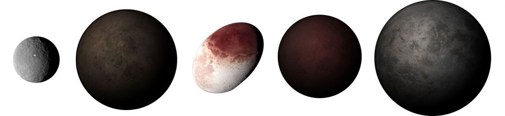

Depuis 2006, l'Union Internationale d'Astronomie (UIA) a redéfinit le terme de planète et a introduit une nouvelle catégorie d'objets, les " planètes naines ".
Avec la découverte de nouveaux objets pouvant correspondre à l'ancienne définition de " planète ", s''est posé le problème du nombre croissant de candidats pouvant prétendre au titre de " planète " et la communauté des astronomes a craint une augmentation drastique du nombre de planète dans le système solaire. Il est donc apparut nécessaire de créer une définition selon des critères permettant de distinguer les planètes déjà connues de ces dizaines voir centaines de candidats potentiels que nous allons découvrir au-delà de l'orbite de Neptune.
Selon l'UAI, une " planète naine " est un corps qui ne satisfait que 2 des 3 critères de la définition de " planète ". Les planètes naines sont donc des objets : en orbite autour du Soleil, en équilibre hydrostatique (de forme plus ou moins sphérique) mais qui n'ont pas dégagé le voisinage de leur orbite A l'heure actuelle, 5 planètes naines ont été officiellement découvertes et il y plus de 340 candidats dont Charon, le plus gros satellite de Pluton, Quaoar, Sedna, Orcus, Varuna, Salacie, etc. pouvant prétendre au titre de planètes naines du système solaire. Statistiquement, on estime qu'il y aurait des milliers de planètes naines dans le système solaire.
Actuellement, nous comptons 5 planètes naines offiiellement reconnues:
Pluton fut découvert en 1930 lors de la recherche d'un corps céleste permettant d'expliquer les perturbations orbitales d'Uranus et Neptune, hypothèse proposée par Percival Lowell (1855 − 1905) comme étant la Planète X. Pluton possède un satellite, Charon, découvert par James Christy en 1978, est un gros satellite (diamètre 1207 km) par rapport à la planète mère (diamètre 2306 km). Charon a une masse une dizaine de fois inférieure à Pluton et le rapport des diamètres est de 1 à 2.
Eris a été photographié pour la première fois lors d'observations effectuées le 21 octobre 2003 avec le télescope Oschin de 1,22 mètres du Mont Palomar, en Californie, par l'équipe du Caltech qui avait déjà découvert plusieurs grands objets transneptuniens (OTN) comme (50000) Quaoar et (90377) Sedna. Grâce au télescope spatial Hubble et à celui du W.M. Keck Observatory la mesure de la masse d'Éris, le plus grand membre de la classe de planètes naines dans notre Système Solaire, a pu être réalisée. Éris est 1,27 fois plus massive que Pluton, autrefois le plus gros membre de la Ceinture de Kuiper des objets glacés gravitant au-delà de l'orbite de Neptune. Image : crédit : NASA, Hubble, Space Telescope. Eris et dysnomie planètes naines
Cérès Cérès est le premier astéroïde découvert. On lui reconnait aujourd'hui la définition de planète naine, depuis la nouvelle définition de l'Union astronomique internationale d'aout 2006. Avec un diamètre d'environ 950 km, Cérès est également le plus grand membre de la ceinture d'astéroïdes situé entre les orbites de Mars et Jupiter. Il fut découvert par accident. Piazzi cherchait à observer une étoile listée par Francis Wollaston sous le nom de Mayer 87 parce qu'elle ne se trouvait pas à la position donnée dans le catalogue zodiacal de Mayer (il s'avéra par la suite qu'il s'agissait en fait de Lacaille 87). À la place, il observa Cérès se déplaçant sur la voute céleste, qu'il crut d'abord être une comète. Image : Cérès vue depuis le télescope spatial Hubble (ACS). Les contrastes ont été augmentés afin de révéler les détails de la surface. Crédit NASA, ESA planète naine cérès
Haumea Haumea est un des plus grands membres d'une famille appelée TNO (Trans-Neptunian Object). Cet objet d’abord dénommé 2003 EL61, car sa première apparition sur une photographie date de 2003, a été officiellement baptisé par l’Union Astronomique Internationale : Haumea. Haumea est un objet transneptunien (OTN) de forme oblongue dont la plus grande dimension est comprise entre 1 960 et 2 500 km. Il fut classé Planète naine le 17 septembre 2008. La découverte de Haumea est controversée et contestée par deux équipes. Haumea possède deux satellites Hi'iaka et Namaka, fait une rotation sur lui-même de moins de 4 h, a une forme ellipsoïdale et un albédo élevé du à sa composition de glace d'eau.